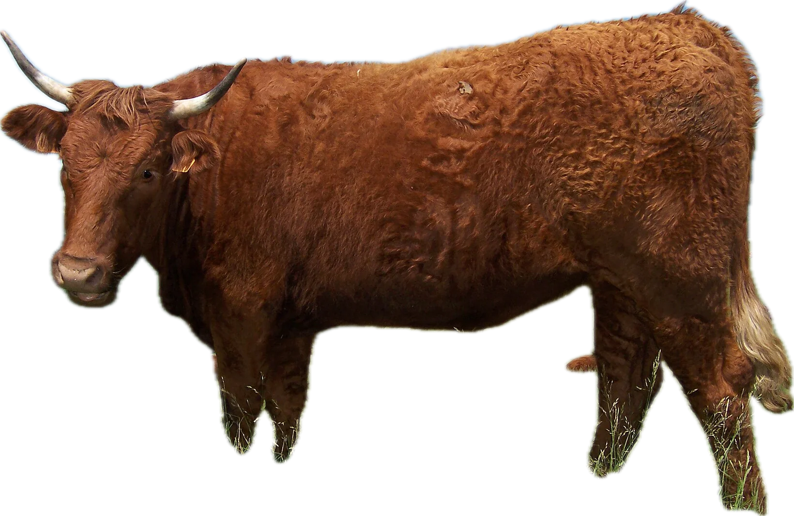
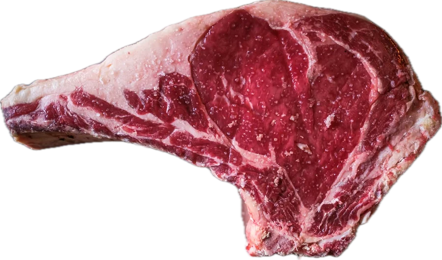

Boucherie artisanale · Lyon 6e · depuis 1987
Choisi. Maturé. Découpé.
Des bœufs Salers, Aubrac et Charolais, maturés sur l'os dans notre cave et découpés devant vous. Faites défiler : on vous montre d'où vient chaque morceau.
- Race
- Salers
- Catégorie
- Génisse
- Né, élevé, abattu
- France
- Maturation
- 30 jours

Le bœuf, pièce par pièce
Anatomie d'un bœuf.
23 morceaux, du collier à la queue. Survolez-les, cliquez pour la fiche.
Le guide des morceaux
Vous cuisinez quoi ?
Choisissez un plat : on vous montre les morceaux qui conviennent, et où ils se trouvent sur la bête.
Fait maison, chaque matin
Anatomie d'une merguez.
La cave de maturation
Le temps, notre meilleur outil.
Nos côtes reposent sur l'os entre 1 et 2 °C, à 80 % d'humidité, pendant trois à huit semaines. Glissez pour voir ce que chaque semaine change.
- Perte d'eau
- 13 %
- Tendreté
- +92 %
- Intensité du goût
- 5 / 10
- Prix indicatif
- 57,90 €/kg

Cave : 1,5 °C · 80 % HR · ventilation continue
Au comptoir cette semaine
La vitrine.
Click & collect
Composez votre colis.
Choisissez vos pièces, on les prépare pour l'heure qui vous arrange. Vous payez en boutique, au poids réel.
Votre colis est vide.
Ajoutez une pièce à gauche.
Retrait en boutique
Votre réservation est prête.
Appelez-nous au 04 65 71 19 87, ou copiez le récapitulatif pour nous l'envoyer par SMS. Rien n'est envoyé automatiquement.